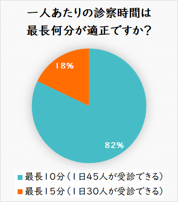

予約が取れない、予約制なのに待ち時間が長いというお声を多数いただき、2021年7月20日から3日間、携帯電話をお持ちの550人の患者さんにアンケートを行いました。
回答者の内訳
| 年齢 |
0～19 |
20～39 |
40～59 |
60～79 |
80～ |
| 男性 |
16 |
32 |
47 |
21 |
4 |
| 女性 |
29 |
142 |
198 |
48 |
13 |
アンケートの結果、82%の患者さんが最長10分の診察時間を選択されました。

- 実現するためには皆様のご協力が必要です。
- 予約時間から10分以上遅れないこと
- ご家族など2人で受診される場合、受付でお申し出いただくこと
- 全てのご相談内容を最初に伝えていただくこと
- 当院の取り組みにご理解をお願いします。
- 来院時間が遅れて別の患者さんに影響が出る場合は診察をお断りすること
- 10分以内に終わらない場合は優先順位の高いご相談内容を対応すること
- 診察の最後で新たなご相談があっても対応できない場合があること
今後診察時間が10分を超えることが増加する場合、予約枠数を縮小せざるを得ませんので、ご配慮お願いいたします。